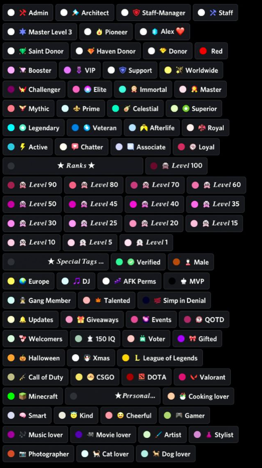
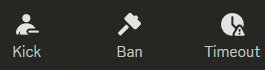
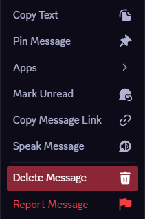
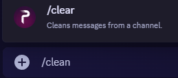
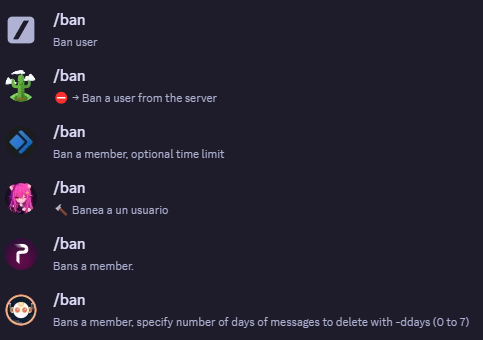

Discord es una aplicacion en la cual puede hablar con personas como Whatsapp,la diferencia es que esta tiene mas funciones. Tambien tiene miles de servidores creados por la comunidad a los que puedes unirte, siempre vas a encontrar uno que encaje contigo ya que hay mucha variedad, de muchos paises, etc. Una de las cosas que mas me gustan de discord es la gestion de los permisos de los usuarios, ya que es mucho mas completa que las de otras aplicaciones.
Pues los permisos que se pueden cambiar son muchisimos, se puede tener mas controlado un canal dependiendo del servidor, como por ejemplo, permitir que tipo de cosas puede mandar un usuario en un canal.
| Roles | ¿Para que sirven los roles? |
|  |
Pues estos son lo que hace el tema de los permisos. Cada rol es configurable para que los usuarios tengan permiso a hacer ciertas cosas, y tengan prohibido hacer otras. Un ejemplo de esto podria ser el rol de moderador, este normalmente modera los canales para revisar que los usuarios cumplan con las reglas del servidor, y suele tener permisos como:
|
|  | |||
|
|
|
|
| Volver Aquí | |||
| ¿En que consiste? | Menu de los mensajes | |
|
Como ya hemos dicho anteriormente, la gente con permisos especiales es capaz de eliminar mensajes, aunque no es lo unico que pueden hacer. Tambien pueden hacer cosas como fijar los mensajes con la opcion "Pin Message" que hace que queden fijados en un apartado especial del canal. Cada canal tiene su apartado especial que se identifica con el emoji de una chincheta. El resto de opciones que se pueden ver pueden ser reañizadas por todos los usuarios, dando igual el rol que tengan, a no ser de que tengan un rol especial que se los impida. |
 | |
| Volver Aquí | ||
|
Un comando sencillo que podemos encontrar aqui es el "/clear". Este comando sirve para borrar mensajes de un canal especifico. Lo que hay que hacer es escribir el comando y seleccionar el bot que va a reañizar la accion, depues de eso necesitamso ingresar la cantidad de mensajes que queremos borrar. |
 | |
|
Y estos son los comandos de banear usuarios, estos te permiten banear a una persona de forma mas rápida, pero es exactamente lo mismo que banear a un usuario de la forma que hemos dicho anteriomente. (aquí) |
 | |
| Volver Aquí | ||